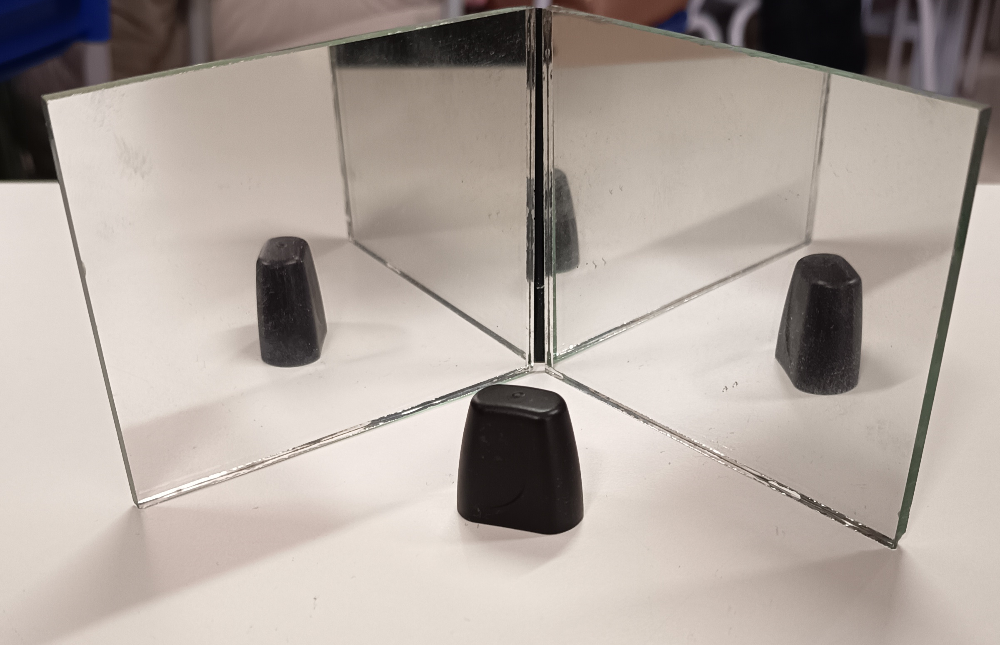
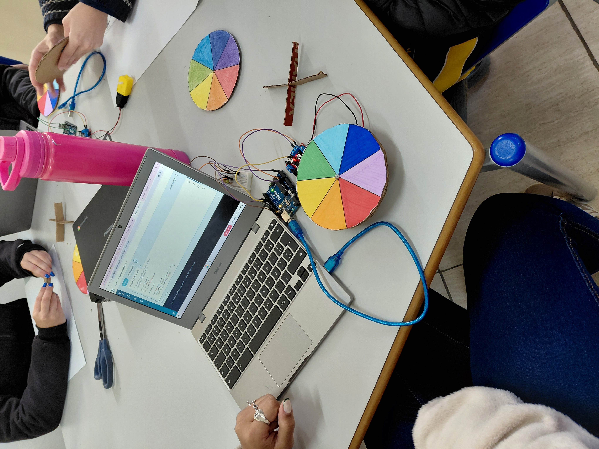

Projetos Desenvolvidos
Dentro dos componentes de programação, robótica e física e tecnociência no IFA, desenvolvemos vários projetos relacionados ao tema " acessibilidade da visão"
DIVULGAÇÃO CIENTÍFICA
Criamos um post criativo sobre boa qualidade de sono.

LIMITES DA VISÃO
Foi criado quadrinhos relacionados em como a luz nos faz enxergar a imagem.

ESPELHOS PLANOS
Foi escrito um texto sobre como é o processo de formação de imagem.

ASSOCIAÇÃO DE ESPELHOS
Utilizamos dois espelhos planos em diferentes graus para ver a associação entre eles.

ESEPELHOS ESFÉRICOS
Criamos um desenho onde mostramos uma situação do dia a dia onde utilizamos espelhos esféricos.

REFRAÇÃO DA LUZ
Fizemos uma atividade prática onde observamos a refração da luz, que acontece quando ela atravessa um dos meios.

DISCO DE NEWTON
CONCEITO: Um disco dividido em 7 setores com as cores do arco-irís, foi rotacionado em alta velocidade. O disco deixa de parecer colorido e passa a ser visto como branco ou cinza claro.
ABORDAGEM NA ACESSIBILIDADE: Substituição por texturas e alto contraste/led.

LED FADE-IN E LED FADE-OUT
CONCEITO: Em vez de o led ligar e desligar instantaneamente, o brilho muda gradualmente.
ABORDAGEM NA ACESSIBILIDADE: Reduz o desconforto visual, facilita a adaptação dos olhos, melhora a experiência do usuário e beneficia pessoas com sensibilidade.
LED GRB
CONCEITO: Com a combinação de três cores( vermelha, azul e verde) em diferentes intensidades , é possível gerar uma ampla variedade de cores, permitindo a personalização de telas, painéis e sistemas de sinalização visual.
ABORDAGEM NA ACESSIBILIDADE: Destaca infomações, indica estados do sistema e facilita a identificação de alertas e notificações.